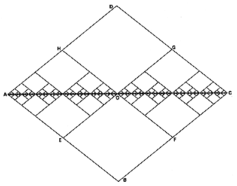

|  |
| Fig. 522.09 The Deliberately Nonstraight Line: Quasi-"straight" lines: ABCDA = unit wave; AEOFCGOHA = ABCDA. As we double the frequency and halve the wavelength of positive and negative waves, we approach relative straightness: proof that two deliberately nonstraight lines between points A and C approach relative straightness to more effective degree than attainable by an assumed straight construction. |